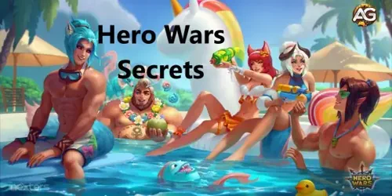
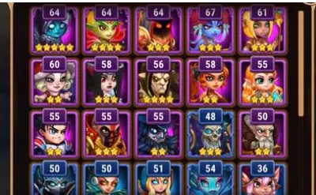

Quer saber o segredo para dominar o Hero Wars Mobile? Descubra por que focar em um único herói poderoso pode mudar o jogo a seu favor. Não perca essas dicas essenciais!
1. Defina um herói para subir de nível
Tentar subir de nível 5 heróis ou vários heróis ao mesmo tempo, pode causar problemas e deixar seu time fraco, em vez disso, é melhor escolher seu herói assassino favorito e progredir o máximo possível com ele.
Às vezes, ter apenas um bem forte é melhor do que ter 5 heróis fracos. Foque em deixar forte o assassino e seu tanque, e depois um suporte. Nas missões de campanha tem bastantes heróis com qualidade para investir; Exemplos: Astaroth, Artemis, Ginger, Fobos.

Ilustração de Dicas e Truques de Hero Wars Alliance, um jogo desenvolvido pela Nexters.
2. Complete as missões diárias
Jamais deixe nem esqueça de realizar as tarefas diárias, e isso conta para qualquer jogo de celular. Missões diárias são sua salvação em jogos para celular e isso é mais agravante se for Hero Wars. Quer perder algumas recompensas que deixa seu herói forte? Não né? Eu aconselho fazer todas as missões diárias e o resultado será grandioso a longo prazo em Hero Wars!
3. Complete as missões do Caminho do Herói
Não esqueça de realizar as tarefas do caminho dos heróis, você recebe muitas recompensas e também recebe moedas do caminho do herói que podem ser usadas para comprar itens na loja, eu aconselho a comprar esferas de artefatos de titãs, subir os titãs é muito importante para sua equipe ajudar nas guerras.
4. O momento mais difícil, decidir quais heróis investir
Hero Wars oferece muitos heróis para desbloquear, então é melhor escolher 5 heróis de sua preferência. Isso ajuda a reduzir o custo em investimento em cada herói e evita que você gaste muitos recursos ou dinheiro. Você precisará na Grande Arena e na Guerra Global de 15 heróis, mas não se apresse, suba de nível 1 heróis depois 2,3,4,5,10,15, 20... Tente focar no assassino, tanque, e depois suportes... Escolha um time de Grande arena que tenha Jhu e Mojo, pois você irá precisar para Hidra, mais tarde você pode troca-los se não gostar;

Equipe de iniciantes em Hero Wars Alliance
5. Desbloqueie incursão instantânea "RAID"
Quando você completa uma missão com incursão instantânea "RAID" seus heróis não obtêm experiência diretamente, em vez disso, os pontos de experiência EXP adquiridos são convertidos em poções de EXP que você pode encontrar em seu inventário e usar para atualizar em qualquer herói de sua escolha.
É aconselhável que você adquira a Incursão RAID para ajudar aumentar sua velocidade de progresso em Hero Wars, faça pelo menos a compra mais barata na loja de esmeraldas para desbloquear a capacidade de fazer missões Instantâneas no jogo, isso facilitará o seu progresso e permite que você pule uma missão e receba imediatamente as recompensas. O valor recebido por batalhas instantâneas por incursão é o mesmo que se jogar normal. Basta fazer uma simples comprar de qualquer item em Hero Wars Mobile e você já se tornara pelo menos VIP 1 e será liberado a Incursão Instantânea RAID. Vale muito a pena e não é caro;
6. Complete as Missões de campanha
Completar as missões da campanha o máximo possível (ou seja, 3 estrelas) concederá mais benefícios, e um deles inclui esmeraldas gratuitas, o qual são o recurso mais importante no jogo Hero Wars. Mais missões com 3 estrelas concluídas = mais esmeraldas. Para você progredir na campanha, você precisa focar nos heróis certos, Orion, Nebula, Dorian, Martha, são bons heróis para campanha, mas o mais importante é ter heróis bem fortes, por isso mais uma vez, aconselho, não tente subir todos os heróis do jogo de uma só vez...
7. Ficou preso na missão de campanha, recue e suba um pouco mais de força
Hero Wars é difícil quando você está fazendo as missões de campanha. Você começa a perder, e é aqui que você precisará ser inteligente e retroceder seu progresso e começar a refazer missões para desbloquear equipamentos, Ouro e EXP para seus heróis e usar esses recursos para fortalecer seus heróis.
8. Faça a batalha da Arena todos os dias (RECEBA ESMERALDAS)
Faça arena pelo menos uma vez ao dia, você receberá Esmeraldas gratuitas de tempos em tempos e isso é extremamente importante se você quer realmente progredir no jogo. Já vi muitos jogadores que relaxam e não fazem arena porque ainda não se sentem preparados ou simplesmente não gostam de PvP (player contra player) em geral, mas isso é um grande erro e você perderá algumas recompensas boas. Fazer a Arena é a melhor forma de você ganhar esmeraldas gratuitas. As pessoas me perguntam por que tenho tantas esmeraldas se eu não gasto dinheiro no jogo, e é justamente esse o meu segredo, eu tento diariamente estar entre os primeiros da arena no meu horário GMT de Arena, e se possível tento ficar em primeiro lugar;
9. Verifique o canal do Alexandre e da Kilvinha ou do Hero Wars no Facebook diariamente
Os desenvolvedores de Hero Wars compartilham no Facebook diariamente recompensa para os jogadores reivindicar no jogo. Para quem está jogando no Facebook, confira a página do Hero Wars no Facebook, e para quem está no celular em breve estaremos postando diariamente aqui ou no nosso grupo do Discord, ou na nossa página do Facebook.
Os jogadores de móbile precisão examinar qual missão da campanha tem a recompensa secreta e, após concluir a missão, você recebe as recompensas pelo sistema de correio do jogo. Para os jogadores do Facebook é preciso acessar o Facebook, clicar na postagem para desbloquear as recompensas.
10. Assista os anúncios mesmo que não goste
Algumas pessoas simplesmente odeiam anúncios de jogos mobile e ignoram eles. Mas se você quiser ficar forte em Hero Wars terá que assistir todos os dias todos os comercias para ganhar energia extra para eventos, moedas, ouro, pedra das almas de heróis, etc. todo recurso é muito importante a longo prazo. Assista os comercias das caixas grátis 2 vezes ao dia, da loja, da troca de ouro, do baú heroico quando disponível, e você recebera recursos para usar para em eventos e isso é bom para estar preparado;
11. Aprenda a usar seus heróis em batalhas
Em Hero Wars você terá dificuldades nas batalhas de guerra, a menos que seja um jogador disposto a gastar bastante e que investiu uma boa quantia de dinheiro no jogo, e mesmo gastando muito sendo p2w no end-game os times se igualam em força e você vai precisar de inteligência e habilidade para vencer. Então, aprenda a utilizar seus heróis da melhor maneira possível, usando a combinação ideal da para ganhar de times com mais de 100k de diferença; Eu registro todas as minhas batalhas em um logbook diário, assim eu sei, qual time meus heróis podem vencer e o que eu preciso evoluir para vencer os adversários, segue aqui o link do meu logbook para você seguir e até copiar e criar o seu;
12. Crie ou participe de uma guilda
As guildas abrem um novo mundo de Hero Wars, no qual você luta contra outras guildas e ganha moeda da guilda que, por sua vez, desbloqueia recompensas insanas, como skins de heróis únicas, ou até mesmo alguns heróis, e principalmente o livro de reforço de evolução que vai te ajudar muito a subir o nível dos heróis. Você ainda tem mais para resgatar da moeda da guilda, se junte a uma guilda você fará muitos amigos e ficará mais forte.
13. Reúna Fragmentos de Alma de Eventos
Certifique-se de farmar Fragmentos de Alma em eventos o máximo possível. Esses novos fragmentos concedem a você poder de estrela de heróis e quanto mais estrela, mais poder, ao contrário de outros jogos de coleção de heróis, você não desbloqueia esses heróis só comprando-os aleatoriamente, mas usa os premium dos evento como um dos métodos de recompensas. Você também pode usar o reforço de evolução para subir seus heróis de nível. Quando seu herói já estiver com seis estrelas você poderá usar almas extras na loja de almas e poderá comprar ótimos itens.
14. Complete a torre diariamente
Faça a torre diariamente, pois ajuda a ganhar fragmentos de equipamentos e mais ouro. É muito importante que você aprenda a vencer a torre desde o início;
15. Reivindique sua energia gratuita todos os dias!
Aproveite sua dose diária de energia gratuita visitando a loja de esmeraldas!!
Você tem direito a isso uma vez por dia!!!
Conclusão do Guia de Dicas e Truques
Em conclusão, dominar as complexidades do Hero Wars Alliance requer dedicação, estratégia e disposição para aprender e se adaptar continuamente. Ao implementar as dicas e truques delineados neste guia, os iniciantes podem estabelecer uma base sólida para sua jornada no mundo do Hero Wars. Lembre-se de experimentar diferentes táticas, sincronizar as composições de sua equipe e ficar informado sobre atualizações e mudanças na mecânica do jogo. Com perseverança e uma mentalidade estratégica, em breve você se verá subindo nas fileiras e alcançando a grandeza no Hero Wars Alliance.
Sugestões de Vídeo:
Como Fazer as missões diarias em Hero Wars Mobile
Melhores heróis para iniciantes em Hero Wars.
Explore novas habilidades com nossos guias em destaque!
Você gostou das nossas dicas para Hero Wars Mobile? Há algo que não entendeu ou gostaria de sugerir mudanças? Convidamos você a se juntar à nossa sessão de comentários na página do Alexandre Games Blog. Não hesite em expressar sua opinião, clarificar suas dúvidas e compartilhar sua sugestões. Clique no botão abaixo para começar: